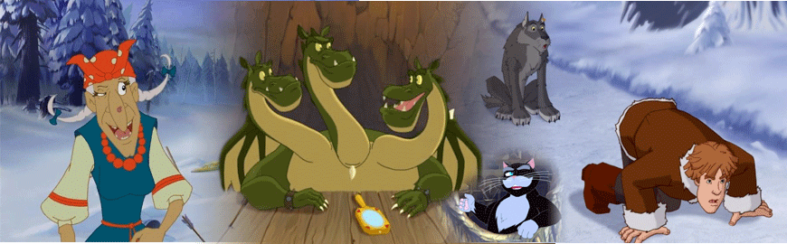

В некотором царстве, в некотором государстве жила-была Василиса, царская дочь. И всем была хороша Василиса — и красива, и умна, да только замуж выходить не хотела, думала ещё немного поучиться. Получить третье образование.
И решил тогда Царь выдать её за первого встречного… которым оказывается Иван из соседнего царства…
Но скоро сказка сказывается, да не скоро дело делается, непросто оказалось стать мужем царской дочки, нужно ещё пройти сказочное испытание. И отправился Иван со своим пом ощником Серым Волком в путешествие по тридевятому царству.
Приказал Царь-батюшка пойти Ивану туда «не знаю — куда» и найти «то, не знаю что». Попросил Иван помощи у кота учёного. Рассказал ему кот, что есть один колодец, из которого доносятся непонятные звуки, и дал волшебное зеркало, через которое с ним можно связаться.
Отважный Иван и мудрый серый волк отправились по заданию Царя. Вместе им под силу выполнить любое задание Царя, остановить лютых недругов и, конечно же, спасти Русь от зла. Но и вляпаться друзья тоже умеют серьезно. Хотя из каждой ситуации они найдут более чем остроумный выход.
